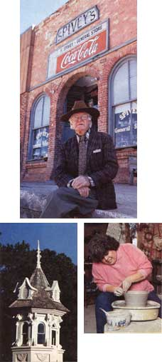
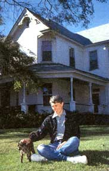
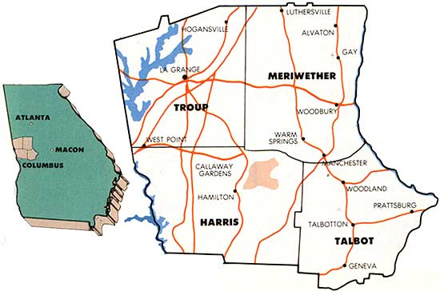

THE BISHOPS HAVE HUNKERED down comfortably on Pine Mountain. We've been here since shortly before Halloween, 1974-or, at this writing, going on 14 years.
Raised the son of one air force man and the stepson of another, as a boy I was willy-nilly an itinerant, only rarely nesting longer than five years in any one place-whether Wichita, Tokyo, Cheyenne or Seville. In fact, I hit puberty blithely assuming that after four or five years every family played location-rotation. For me, the mercantile boast "35 Years at the Same Site" means only that Ma and Pa Proprietor and their disadvantaged kids have probably never ridden the "bumpem" cars on the top of a Ginza department store or ambled through an Andalusian olive grove at the eye-stinging height of a Spanish summer.
It is therefore mildly amazing that I have now lived in Pine Mountain for almost a decade and a half. What has kept me here? What is it about this pecan-tree-and-sycamore shaded trackside burg that has converted me from a professional peripatetic to a fogyish stay-at-home? The answer-beyond the clear one that we've invested beaucoup hours, sweat and hard-won greenbacks in remodeling a Victorian house once owned by my wife Jeri's grandfather, William Phelps Ellis, for nearly 40 years the town's beloved doctor-is simply that, hey, we really like it here.
This morning, small red ants were swarming on the hummingbird feeder-a glass cylinder sporting four bright red plastic blossoms-hanging from the kitchenside eave of our garage. I had to hose them off: The ants are an annoyance, but later today, the hummingbirds will return. The eggbeater blur of their wings, the blood spot at the male's throat and the metallic green jackets of their plumage will feed the eye even as the birds themselves feed.
Nor are hummingbirds the only winged creatures to visit, or to overfly, our hamlet.
We get jays, brown thrashers, mockingbirds, chickadees, goldfinches, gray catbirds, flickers, owls, starlings, cattle egrets, sparrows, butterflies and, near dusk, dive-bombing, chittering bats. Some cynical folks would append to this list pot-spotter planes-which, however, I'm reasonably certain are scarcer than the hummingbirds. Besides, thanks to the summer's drought, these eyes in the sky have been pretty squeaking scarce.
A mile and a half south on Highway 27 lies Callaway Gardens, where geese, ducks and a few more-exotic species of waterfowl sometimes disport-along with human sojourners drawn to the beach, the golf courses, the Sibley Center greenhouses, the Florida State University's Flying High Circus (all the performers are college students) and the national water-ski championships. (This fall, the Gardens will be opening the Day Butterfly Center.) Having seen most of this stuff umpity-ump times already, I generally try to duck out of impromptu "family outings" to Callaway.
In August, though, my 16-year-old son, Jamie, bought himself an expensive Taiwanese racing bike. I had my own rust-crusted Italian racer repaired. Together, we began taking early-morning rides on the Garden's well-kept asphalt bike trails. Not only can I inhale an invigorating faceful of bugs while freewheeling down these trails' pine-curtained drops, but also, pistoning upslope after my son, I can render my thigh and calf muscles wobbly-weak for days. Jamie's highertech velocipede makes my vehicle seem to climb no better than a wheelbarrow full of chimney bricks.
Confessedly, the fun is not so much in the exertion as in the moments of breathgrabbing repose. One morning, as the sky lightened, Jamie and I saw two other cyclists, a windedlooking jogger and, near the construction site of the new butterfly house, six white-tailed deer. A buck stood half hidden among the trees, but a doe with twin fawns browsed at the edge of the parking area. We stood stockstill astride our bikes, the spotted fawns far more fidgety than mama as the morning set up around us like a gigantic apricot aspic.
What else do Pine Mountain and encompassing Harris County have going for them?
Roosevelt State Park-with its lakes, hiking trails, camping facilities and bell-shaped, rock-walled swimming pool, built by the Civilian Conservation Corps in the 1930s-is a brief car ride, or a wind-stealing bike journey, up the lovely green mountain that gives our community its name.
Until the late 1950s, incidentally, Pine Mountain was called Chipley-for an energetic railroad builder who still has a town in Florida named after him. Then, the Chipley City Council, with some nudging from the Callaways, decided that "Chipley" had neither the evocativeness nor the euphony necessary to attract visitors to our would-be resort and recreational area. Against the opposition of some tradition-minded residents who took pride in the old moniker, they instituted the change. Now our late railroad tycoon founder is commemorated only in the appellation of a small shopping center (Chipley Village), in a street designation and by the fact that our local historical society bears his name.
But let's go back up to Roosevelt State Park, on Pine Mountain itself, and take a cold turkey header into the CCC pool. I haven't been swimming there for a year or two, but the first time I stepped into its crystal-clear water-two decades ago?-I thought my foot had been flash-frozen and all the connecting bones between my big toe and the top of my skull turned to reverberating brass. With a new filtering system, nowadays the water may be a bit warmer, but I recall the CCC pool as an equal opportunity baptizer. All who paid their fee and immersed, black or white, eventually turned the same egalitarian shade of blue.
My 15-year-old daughter, Stephanie, likes Harris County because "all my friends are here." Moreover, Columbus-home to minute commute southward. West Georgia Commons Mall on the perimeter of LaGrange lies a happy 18-mile jaunt to the north. And when shaken by the irresistible agues of mall fever, Stef knows that Hotlanta and its roofed-in aluminum-and-glass bazaars await at the end of a 90-minute emergency run. Like her mother and me, she understands that residence in Pine Mountain provides access to many of the material and cultural benefits of metropolitan life without subjecting us to its traffic jams, taxes, smother-fried smog and out-on-the-street facelessness.
Faceless? In Pine Mountain? Not likely.
Although Harris County is in the midst of a small population and building boom, as folks flee north from Columbus for more amenable and somewhat less expensive housing, a long-time resident can still walk into town and encounter more familiar faces than otherwise. One morning not long ago, on my daily constitutional to the post office (to which all freelance writers repair with expectations even greater than Dickens's Pip's), I realized that in the space of two blocks I had greeted five different people whom I knew by name and who knew me in return: a recent widower, and erstwhile mayor, who lives in the duplex across King Avenue from us; a thirtyish black couple on their way to pick dewberries at an out-of-town site they cagily refused to divulge; the owner of the towel outlet on Railroad Street; and the bearish, amiably smiling pastor of the Methodist Church that my family and I attend.
For the first time in my life, I know nearly all the business people in my hometown-hair stylists, plumbers, bankers, gift-shop operators, etc. I also know the manager and presiding chef at the Bon Cuisine restaurant, a man named Charles Duck. Until he found that his luncheon business was running him ragged for too little profit and so diverted all his time and energy to his dinner trade, Jeri and I tried to visit the Bon Cuisine about once a week. Where else could we order for lunch chocolate chili, or a French burger, and finish off with either hot blueberry pudding in a wide-mouthed parfait glass or an ample slice of red velvet cake? Hardee's has just assembled a restaurant here, but I don't regard this as progress.
For when I think of Pine Mountain, I think immediately, too, of this big old house. And thinking on this house, I invariably think of Stephanie at the Mendelssohn piano in the alcove under our foyer stairs. I hear her playing a Beethoven sonatina or a former top40 hit like "The Next Time I Fall," and my head fills up with so many reverberating notes, so much soppy sentiment, that, here in my second-story study, I lean back in my chair and self-embarrassedly thank God for having brought us to this place.
Okay, okay. My little essay may strike you as less about Pine Mountain than about the Bishop clan and the inside of this writer's foolish-fond head. Conceded. I can catalogue our town's physical quirks and quiddities (from the looming white water tower that lights up every Yuletide like a cross between a Martian war machine and a Macy's Christmas tree, to the dress shops and boutiques competing for tourist dollars along Railroad Street and Main, to the dogwood-dotted neighborhoods through which Jeri and I like to stroll in the bat-haunted dusk after supper), but the essential meaning of the place, I now realize, is that ineluctably over the past 14 years it has become home.
It has become home in the same way that any beloved place does-by beginning to inhabit its residents just as they inhabit it. Pine Mountain lives in me so authoritatively that I have written my town into several of my stories under fake names like Barclay, Beulah Fork and Caracal. I will undoubtedly use it again in a fictional context. Meanwhile, in the reality of our day-to-day lives, the Bishops abide here because Pine Mountain has come to abide in us. Leaving-although only a few years ago I would never have believed myself capable of feeling this way about a mere "location"-now seems unthinkable. I believe we're hunkered down here for good.
Michael Bishop is a well-known science-fiction writer with 12 novels and numerous collections of short stories to his credit. Many of his short works of fiction and poetry have appeared in such publications as Playboy and Omni. His novel, No Enemy But Time won the Nebula Award Best Novel, 1982, and he has two other Nebula Awards and a Rhysling Award for science fiction poetry.
|
 Right: It's worth a trip to Talbotton to visit Mr.Spivey's eclectic store. Bottom left: a view of Callaway's butterfly house. Bottom right: Pine Mountain Valley potter Pat Hooten works full-time at her craft. |
 Science-fiction writer and world traveler Michael Bishop has put down roots in Pine Mountain. |
 |